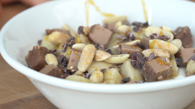

Peanut Banana Cocoa Crunch

Ingredients
Bowl Components
- 150 g (~2/3 cup) nonfat Greek yogurt
- 65 g (~1/3 cup) frozen banana chunks
- 1/2 protein bar of choice, crumbled
- 14 g (~1/4 cup) peanuts
- 6 g (~ 1 tsp) cocoa nibs
- Drizzle of honey
Instructions
Assemble: Layer all Bowl Components — ****in the listed order — ****to a serving bowl. Adjust amounts to your
preference, if needed.
Enjoy.
Notes & Variations
Use any other fruits or toppings you have around. Try adding your favorite protein powder.